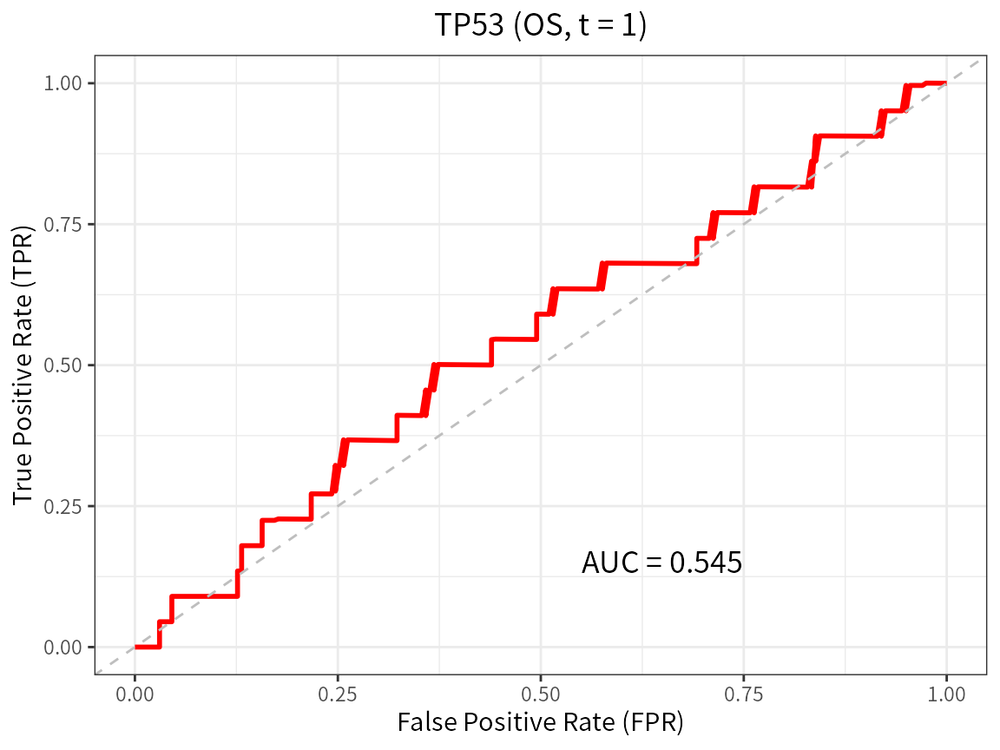

What the package is for
CanPAS runs one survival analysis over many public cancer cohorts and
one uniform data schema. A cohort is identified by its accession
(GSE31210, TCGA-LUAD, CGGA_693,
…); an endpoint is requested by family
(OS, DSS, DFS, PFS,
MFS) and the concrete endpoint token a cohort actually
reports (RFS, PFI, DFI, …) is
resolved per cohort and returned with every result. This vignette is
deliberately offline: it uses the shipped catalog and
small synthetic cohorts so that every number below is reproducible
without a mirror, a network connection or a download.
The catalog
dataset_info is one row per curated cohort, with the
sample-size columns and the endpoint-family mapping.
di <- dataset_info
dim(di)
#> [1] 197 32
head(di[, c("Accession", "Type", "N", "EndpointFamilies")], 4)
#> Accession Type N EndpointFamilies
#> 1 GSE14814 Lung Cancer 133 OS,DSS
#> 2 GSE8894 Lung Cancer 138 DFS
#> 3 GSE31210 Lung Cancer 226 OS,DFS
#> 4 GSE13213 Lung Cancer 117 OSWhich families a cohort can be analysed on, and with which token:
endpoint_options("TCGA-LGG")
#> family token derived label
#> 1 OS OS FALSE OS
#> 2 DSS DSS FALSE DSS
#> 3 DFS DFI TRUE DFS (DFI) [derived]
#> 4 PFS PFI TRUE PFS (PFI) [derived]
endpoint_resolve("GSE31210", "DFS") # that cohort reports RFS, not DFS
#> [1] "RFS"
endpoint_resolve("TCGA-LUAD", "PFS") # a TCGA-derived endpoint
#> [1] "PFI"Getting real data
On a machine that can reach the CanPAS mirror (or with the local
artefact tree present, via CPAS_DATA_ROOT), expression and
survival are fetched and merged in one call. These chunks are not
evaluated here because they need the mirror.
d <- cohort_merged("GSE31210", c("TP53", "GAPDH"), type = "DFS", clin = TRUE)
colnames(d)
# a signature instead of one gene: any R expression on the gene columns
d <- cohort_merged("GSE31210", NULL, type = "RFS", signature = "0.5*TP53+0.5*GAPDH")An end-to-end analysis, offline
We build a small cohort that has exactly the merged schema
(ID, <token>_time,
<token>_status, one column per marker) and run the
same functions the package runs on real data.
mk_cohort <- function(n, prefix, seed) {
set.seed(seed)
x <- rnorm(n, 10, 1)
hr <- exp(0.35 * (x - 10))
data.frame(ID = sprintf("%s%03d", prefix, seq_len(n)),
OS_time = round(rexp(n, hr / 8) + 0.05, 3),
OS_status = rbinom(n, 1, 0.65),
TP53 = x,
GAPDH = rnorm(n, 12, 1),
age = round(runif(n, 35, 82)),
stage = factor(sample(c("I", "II", "III"), n, TRUE,
prob = c(0.4, 0.35, 0.25))))
}
d1 <- mk_cohort(220, "P", 1)
d2 <- mk_cohort(180, "Q", 2)Univariable Cox, one model per covariate:
u <- COX_analysis(d1, type = "OS", cont_Variates = c("TP53", "age"),
cate_Variates = "stage", method = "uni")
u$results_table[, c("Variates", "Level", "N", "HR", "HR95L", "HR95H", "Pvalue")]
#> Variates Level N HR HR95L HR95H Pvalue
#> 1 TP53 <NA> 220 1.4271546 1.1919508 1.708770 0.0001083793
#> 2 age <NA> 220 0.9992857 0.9880287 1.010671 0.9016145383
#> 3 stage <NA> 220 NA NA NA NA
#> 4 stage II 220 1.2263295 0.8276777 1.816992 0.3090936872
#> 5 stage III 220 1.1704069 0.7746174 1.768424 0.4549262121A multivariable model. Since this version the default is the
fail-safe (auto_repair = FALSE): if a
covariate cannot be co-estimated, the model is refused with its
reasons instead of being quietly reduced.
m <- COX_analysis(d1, type = "OS", cont_Variates = c("TP53", "age"),
cate_Variates = "stage", method = "multi")
m$estimable
#> [1] TRUE
m$results_table[, c("Variates", "Level", "HR", "Pvalue")]
#> Variates Level HR Pvalue
#> 1 TP53 <NA> 1.446307 9.292658e-05
#> 2 age <NA> 1.003238 5.807018e-01
#> 3 stage <NA> NA NA
#> 4 stage II 1.237542 2.901609e-01
#> 5 stage III 1.248547 2.973614e-01
d1$flat <- 1 # a covariate with no variation at all
bad <- COX_analysis(d1, type = "OS", cont_Variates = c("TP53", "flat"),
method = "multi")
bad$estimable
#> [1] FALSE
bad$offending_terms
#> [1] "flat"
bad$reasons
#> [1] "flat [continuous]: constant across the complete cases"The refusal is a value, not an exception, so a script does not have
to wrap the call in tryCatch(). Ask for the old behaviour
explicitly and every modification is recorded:
fixed <- COX_analysis(d1, type = "OS", cont_Variates = c("TP53", "flat"),
method = "multi", auto_repair = TRUE)
fixed$metadata$dropped_covariates[, c("variable", "reason")]
#> variable reason
#> 1 flat constant across the complete casesKaplan-Meier with a cut-point rule:
km <- plot_km(d1, type = "OS", marker = "TP53", cutpoint = "median")
km$logrank_p
#> NULLTime-dependent ROC at one, three and five years
(plot_roc() returns one ggplot per time point, with the
estimated AUC attached as the "AUC" attribute):
roc <- lapply(c(1, 3, 5), function(t)
plot_roc(d1, type = "OS", marker = "TP53", predict.time = t))
round(vapply(roc, function(p) attr(p, "AUC"), numeric(1)), 3)
#> [1] 0.545 0.643 0.667
roc[[1]]
Two-stage meta-analysis across cohorts
The same marker in several cohorts is pooled in one call. This
version defaults to method = "REML"; "DL"
reproduces the previous estimator and "HK" gives the
Hartung-Knapp-Sidik-Jonkman interval. One call always reports the token
each cohort contributed, the pooling class of that token and the
manifest of the run.
mt <- cpas_meta(c("P", "Q"), marker = "TP53", type = "OS",
merged = list(P = d1, Q = d2))
mt$per_dataset[, c("dataset", "endpoint", "pooling_class", "n", "events", "HR")]
#> dataset endpoint pooling_class n events HR
#> 1 P OS Exact-equivalent 220 142 1.401278
#> 2 Q OS Exact-equivalent 180 120 1.688170
mt$pooled[, c("method", "k", "HR", "lower", "upper", "p", "tau2", "I2",
"pi_lower", "pi_upper", "pi_alt_lower", "pi_alt_upper")]
#> method k HR lower upper p tau2 I2
#> 1 REML 2 1.528464 1.273973 1.833792 4.973478e-06 0.008585629 0.4949526
#> pi_lower pi_upper pi_alt_lower pi_alt_upper
#> 1 NA NA 1.18183 1.976766The manifest
Every analysis result carries a manifest: which cohorts, which token, which pooling classes, what was dropped and why, the meta-analysis method, tau^2, I^2, both prediction intervals, the versions and the timestamp. It prints and it converts to a table.
cpas_manifest(mt)
#> CanPAS analysis manifest
#> ========================
#> analysis : cpas_meta
#> cohorts : P, Q
#> n_cohorts : 2
#> endpoint_family : OS
#> resolved_token : OS
#> resolved_tokens_per_cohort : P=OS, Q=OS
#> token_role : primary
#> pooling_mode : family
#> pooling_classes_pooled : Exact-equivalent
#> pooling_class_source : token-map fallback
#> overlap_mode : warn
#> overlap_source : inst/extdata/cohort_overlap.csv
#> overlap_pairs : none
#> overlap_dropped : none
#> selection_rule : the 2 cohort(s) supplied in 'datasets' were requested for family OS and the concrete token each one provides was resolved from the catalog; 2 cohort(s) entered the pool and 0 were excluded (reasons in $excluded)
#> rows_dropped : none
#> n_rows_dropped_reported : 0
#> covariates_dropped : none
#> cut_rule : not applicable (meta-analysis of a continuous marker; no cut-point is searched)
#> cut_points_searched : NA
#> search_adjusted_p : NA
#> ph_test_cox_zph : GLOBAL p = 0.162 (2 cohort x term check(s))
#> meta_method : REML
#> auto_repair : FALSE
#> pi_method : t
#> tau2 : 0.00858563
#> I2 : 0.494953
#> pi_primary : [NA, NA]
#> pi_primary_rule : t distribution with k-2 df on sqrt(se_pooled^2 + tau2)
#> pi_alt : [1.18183, 1.97677]
#> pi_alt_rule : normal approximation (1.96) on sqrt(se_pooled^2 + tau2)
#> versions : R 4.5.1; CanPAS 1.0.0; survival 3.8.3; metafor 5.0.1
#> timestamp : 2026-09-30 20:56:45 CST
#> notes : auto_repair = FALSE (fail-safe): a model that would need covariates dropped, levels merged or rows excluded is reported as not estimable instead of being repaired
#>
#> per-cohort pooling classes (2 row(s)): $manifest$pooling_table
head(as.data.frame(cpas_manifest(mt)), 8)
#> field value
#> 1 analysis cpas_meta
#> 2 cohorts P, Q
#> 3 n_cohorts 2
#> 4 endpoint_family OS
#> 5 resolved_token OS
#> 6 resolved_tokens_per_cohort P=OS, Q=OS
#> 7 token_role primary
#> 8 pooling_mode familyWhere to go next
-
vignette("endpoints-and-pooling", package = "CanPAS")covers the endpoint semantics layer, the two pooling modes, shared-patient overlap and the manifest in detail. -
?cpas_meta,?COX_analysis,?cpas_km_pooled,?plot_meta_forestare the reference pages for the analysis functions.